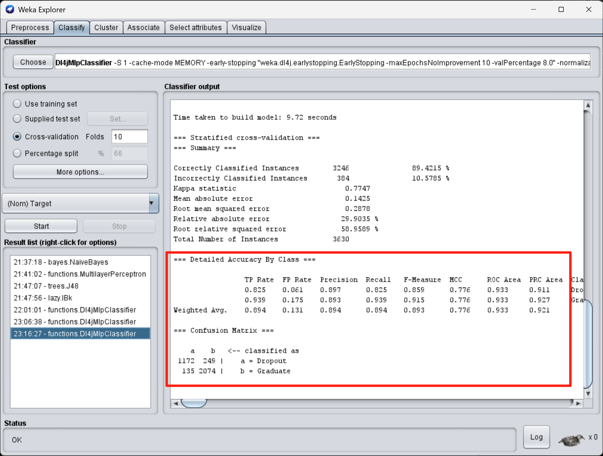
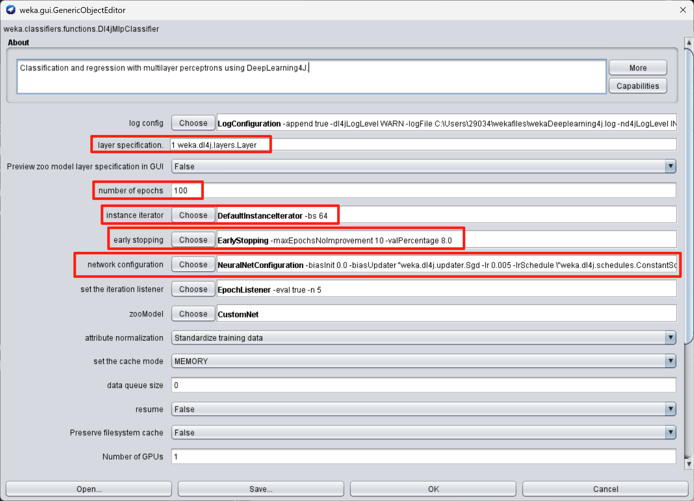

个人作品与经历 / 2026
软件开发、数据分析
与团队交付。
信息技术本科生，具备软件开发、机器学习与数据分析实践。从独立开发 Android 应用，到组织团队交付推荐平台，我关注需求、实现与验证之间的衔接。现居新加坡，英语可作为工作语言。
2026 年 12 月下旬可到岗 · 2027 年 3 月毕业后可全职
01
精选项目
从目标到实现，关注我的具体贡献与验证方式。
应用开发 / 自动化测试
2026.05 – 2026.08ScamWise Campus
反诈骗教育与链接安全检测 Android 应用｜独立开发
18 个训练场景 · 102 个自动化测试
- 项目目标
- 为学生提供诈骗场景训练、学习反馈与链接威胁检测。
- 我的贡献
- 独立完成 5 个核心页面、分层架构、本地数据存储和外部 API 集成。
展开方法与验证
关键决策
采用 MVVM + Use Case + Repository 分离界面与业务逻辑，以 Room 保存学习记录，不要求用户创建账号或填写个人资料。外部 URL 检测前征得同意，将结果表述为“未发现已知威胁”；提供清除历史、语义标签和反馈提示，避免恐吓式文案与惩罚性打卡机制。
验证与结果
79 个单元测试与 23 个 UI 测试覆盖业务层和页面流程。将密钥配置迁出源码，清理 Git 历史并重置曾暴露的 API Key。
复盘与后续改进
反思中识别出自动化测试无法替代发布审查：测试没有发现密钥暴露、备份配置假设和大屏适配问题。下一步计划提前梳理数据流与威胁模型，并把备份规则、导航一致性、无障碍和最终打包文件检查纳入发布清单。
Kotlin · Jetpack Compose · MVVM · Room · Retrofit · Google Safe Browsing API · JUnit · Espresso
全栈开发 / 项目协作
2026.05 – 2026.08智能数码产品推荐平台
项目经理兼全栈开发｜4 人团队
3 次迭代 · 10 个用户故事按期交付
- 项目目标
- 构建覆盖 5 类数码产品的推荐平台，支持结果展示与分享。
- 我的贡献
- 担任四人团队项目经理兼全栈开发，参与前端、API 联调与部署，独立实现结果分享功能。
课程教学原型 · 产品与价格来自后端及公开／教学数据，非实时零售库存。截图展示团队交付界面。
展开方法与验证
关键决策
制定用户故事验收标准，追踪需求与测试对应关系，协调 PR 合并和版本冻结。用户指南记录了匿名搜索、登录后的收藏与历史记录，以及通过 /api/compare 返回最多三款产品对比的团队交付流程；缺失参数明确显示 N/A 或 Not specified。
验证与结果
候选版本通过 12/12 项测试；统筹发布检查清单与验收。交付结果为团队成果，个人实现重点为分享功能和前后端集成。
Python · Flask · PostgreSQL · HTML/CSS/JavaScript · GitHub Actions · Render · GitHub Pages
机器学习 / 验证策略
2026.05 – 2026.08野生动物保护图像分类
五人团队组长｜DrivenData 国际竞赛 · 公开榜前 5%
公开榜 Log Loss：2.5453 → 1.0136
- 项目目标
- 对 8 类、16,488 张野生动物图像进行分类，并评估跨站点表现。
- 我的贡献
- 担任五人团队组长，搭建训练与验证流程，主导 19 组控制变量实验及模型调优。
展开方法与验证
关键决策
定位随机划分造成的地理站点数据泄漏，改用 Stratified Group K-Fold 按站点分组，实现训练与验证站点零重叠。
验证与结果
结合 TTA、五折集成与 logit 融合，公开榜 Log Loss 降低约 60%。该指标来自公开榜，不等同于独立生产环境表现。
Python · PyTorch · FastAI · ConvNeXt · Optuna · Stratified Group K-Fold
学生辍学预测与模型比较
个人课程项目｜数据分析与机器学习
10 折交叉验证 · 加权 F1 0.893
- 项目目标
- 分析 3,630 条学生记录及 36 项特征，比较辍学预测模型。
- 我的贡献
- 个人完成探索性分析、特征处理、K-means 聚类和多模型比较。

Run C：10 折交叉验证与混淆矩阵A1-Junjie-Chu.docx · Q9，Run C 结果截图
Run C：模型与早停参数A1-Junjie-Chu.docx · Q9，Run C 参数截图课程实验结果 · 指标来自报告中的 Weka 交叉验证输出，不代表独立外部测试集或实际学生干预效果。
展开方法与验证
关键决策
以 ZeroR 为基线，比较 J48、Naive Bayes、IBk 与 DL4J MLP 的 10 折交叉验证结果，权衡可解释性与分类指标。普通 MLP 因计算成本改用 66% 训练集划分，报告单独注明该结果不能与交叉验证指标直接比较。
验证与结果
Q9 的 Run C 原始截图确认：3,630 条记录、10 折分层交叉验证，准确率 89.4215%、加权 F1 0.893、MCC 0.776、ROC-AUC 0.933、辍学召回率 0.825。配置为 100 epochs、batch size 64、learning rate 0.005、早停验证比例 8%。
Weka · EDA · K-means · J48 · Naive Bayes · DL4J MLP
前端开发 / 敏捷协作
2025.09 – 2025.12SmartSeat
课堂座位管理课程项目｜前端开发 · 曾任 Scrum Master
七人团队 · 6 次 Scrum 迭代
- 项目目标
- 构建学生预约、讲师管理和管理员视图，支持课堂座位管理流程演示。
- 我的贡献
- 负责前端开发，参与登录与选座页面实现；与后端开展结对编程和接口联调，并曾担任 Scrum Master。
课程演示界面 · 展示学生预约与讲师管理流程。
展开方法与验证
关键决策
选座页面出现座位位置偏移后，与后端联合排查，定位双方对坐标原点的约定不一致。登录模块进度受阻时，与后端结对编程，交替进行编码和检查，推进界面交付。
验证与结果
项目反思记录了六次迭代中的前后端集成过程，并附学生预约、讲师与管理员界面截图。展示的是课程演示系统，不代表已经在校园生产环境部署。
复盘与后续改进
联调问题暴露了口头接口约定的不足。后续改进计划是在迭代规划时明确坐标原点、参数范围和示例数据，并提前验证跨角色依赖；对设计歧义和进度风险更早提出阻碍。
Scrum · Pair Programming · Figma · GitHub Issues · CI/CD
02
实习经历
2026.07 – 至今
AI 工程师实习生
上海意言科技有限公司（TYRION.AI）+ 新加坡 Basilos Pte. Ltd.
- 完成 InsightFace、CompreFace、DeepFace 等方案选型与开放集测试，推动 Workbench Connector 集成；在小规模验证集中实现 13/13 已知样本匹配、10/10 陌生样本拒识，并稳定处理 6 类异常输入。
- 完成 PNG-to-SVG 与 Traced Paths 工程验证，测试 36 张黑白技术图、60 张彩色插画及 3 组混合方案，为产品选型形成可复现实验依据。
- 调研 20 个主流海外 AI 模型，并评估 Lark CLI 9 个模块的自动化能力，解决 Scope 授权与身份切换问题，沉淀团队复用操作规范。
2024.04 – 2024.09
运营与项目协调实习生
新加坡 Specialists Trade Alliance of Singapore（STAS）
- 支持认证材料、供应商调研及空间参数测试，并维护 3 场行业展会的付款、参展商与市场研究数据。
03
教育与能力
2025.01 – 2027.03
詹姆斯库克大学新加坡校区
信息技术学士 Bachelor of Information Technology
- GPA 5.85/7.00｜专业前 5%
- 高级软件工程、移动计算、数据库建模、机器学习与数据科学、网络安全应用
2021.10 – 2024.11
新加坡建设局学院（BCA Academy）
建筑工程文凭 Diploma in Construction Engineering
技术与方法
软件开发
Kotlin · Python · JavaScript · SQL · C++ · Jetpack Compose · MVVM · Room · Retrofit · Flask · PostgreSQL
数据分析与机器学习
pandas · NumPy · scikit-learn · PyTorch · FastAI · Weka · EDA · OpenCV · Optuna
测试与工程实践
JUnit · Mockito · Espresso · Git/GitHub · GitHub Actions · CI/CD · OOF · Group K-Fold
项目协作与用户研究
Scrum · User Story · Requirements Traceability · Release Management · Figma · Lean UX
校园贡献与荣誉
JCU Learning Centre｜EMAS IT 同伴导师（2026.05 – 至今）
为 50 余名学生提供编程及核心 IT 课程辅导，并与项目顾问跟踪学习进展。
荣誉
BIMAGE Virtual Design & Construction Boot Camp Competition 季军（四人团队，2023）